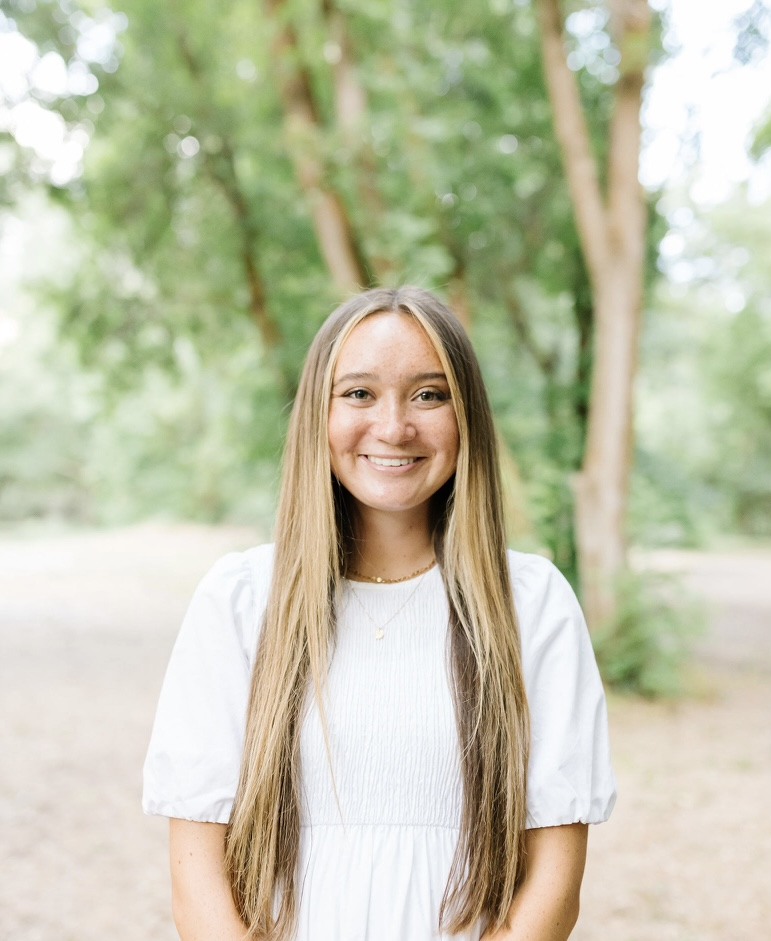
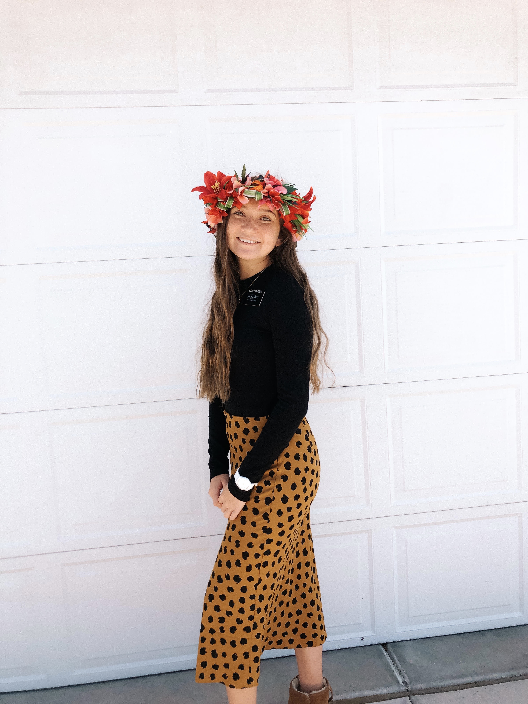

My name is Kennan Richards. I am a junior at Brigham Young University. I am pre-business with the hopes of entering the Marketing program this fall. I am minoring in psychology. My three favorite places to eat are...
- Sancho's Tacos
- Aubergine
- Cappy's Cafe
I am a professional videographer. I have been making videos since I was 15 years old of vacations, life, and special events. I have been specializing in wedding videography for over a year now and am loving it!
I was called to serve in the Vanuatu Port Vila mission on the island of New Caledonia. I served here from March 2019 until April 2020 when I was sent home due to COVID-19. I was then reassigned to the Ohio Cinncinati mission for the remaining 2 months of my mission.